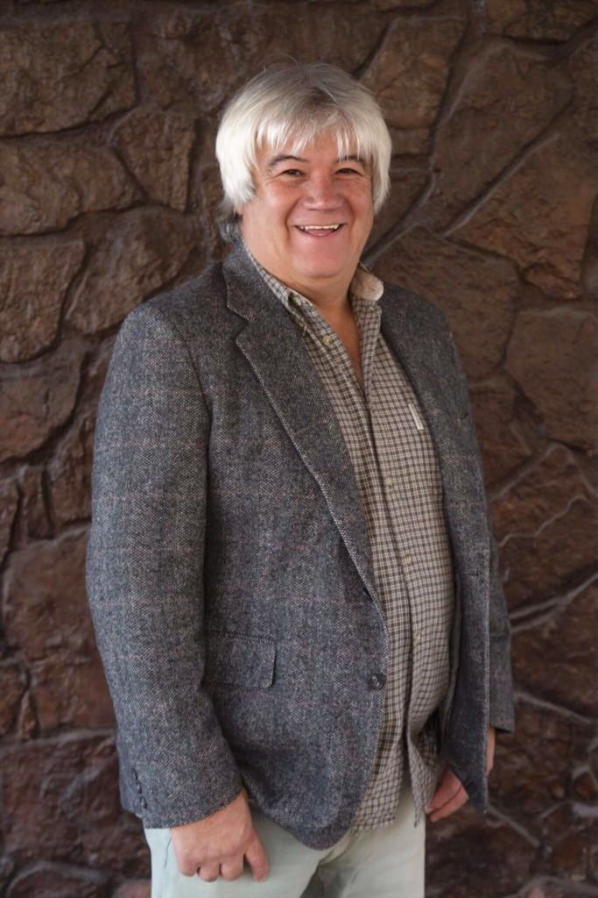

APROTEC — Campaña 2026
Argumentos, Preparación y Personalidad
Tu Carrera Municipal, Nuestra Lucha.
Defendiendo la carrera funcionaria de los técnicos y profesionales de la Municipalidad de Arica. Terminemos con el amiguismo, luchemos con hechos y transparencia real.

verified
Liderazgo
Compromiso Real
groups
Comunidad
Arica Avanza
Gonzalo Ramos
Dirigente Municipal — APROTEC